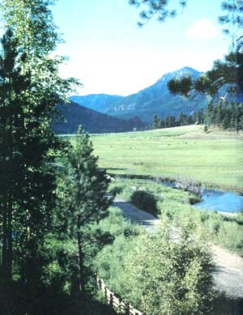
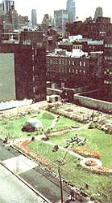

This conservation organization helps property owners reduce taxes while protecting land and wildlife.
High in the Colorado Rockies, near the little town of Pagosa Springs, sits the Moore Ranch-a paradise of mountains and meadows filigreed with sparkling snowmelt streams. Owners Joe and Beth Moore love it. So do their cattle. And so do the herds of deer and elk that wander down each fall from the mountains, crossing the ranch en route to their traditional wintering grounds in the sheltered valleys below...only to turn around a few months later and follow the spring green-up back across the ranch to their high-country summering meadows. For as long as the Moores can remember or imagine, this annual circular migration has been a part of the land.
In recent years, however, the people have come. Herds and droves of people. And with the people came subdivisions looking like prairie dog towns, condominiums like anthills, and a blight of summer ranchettes along either side of the twisting two-lane blacktop that divides high country from low. Before much longer, the Moores knew, most wildlife migration routes would be sealed off by this onslaught of development, leaving hundreds of deer and elk stranded in the high country each winter to starve and freeze. Something had to be done, and the Moores were of a mind to do it.
What Joe and Beth did-with encouragement and guidance from a San Francisco-based land-conservation organization called the Trust for Public Land (TPL) and a Pagosa Springs citizens' group called Upper San Juan Land Protection-was to designate a permanent conservation easement across the 363-acre portion of their ranch that serves as a wildlife migration corridor.
Land ownership encompasses a bundle of separate rights-mineral, water, agricultural, development, and others-with a landowner having the power to sell or give away some rights while retaining the rest. A conservation easement is a legal instrument with which the landowner separates and retires the right to subdivide and develop the land. Under the terms of the Moores' easement -which was legally attached to the property's deed and thus is binding on all future owners-Joe and Beth can ranch their land as always, continue to control public access, and pass the property on to their heirs or sell it as they desire. But the 363 acres dedicated to the conservation easement can never be subdivided, developed, or used in any way that would interfere with its suitability as wildlife habitat. The Colorado Division of Wildlife-to whom the easement was granted for guardianship-will inspect the land annually to assure that the terms of the easement are being met.
When an easement is donated to a local land trust, the donor generally is expected to make a contribution to an endowment that covers the costs of establishing baseline data, annual monitoring to assure that the terms of the easement are being met, and enforcement if necessary. The amount of this contribution, which is tax deductible, is negotiated with the land trust and is based on the complexity of monitoring and other anticipated difficulties. For the Moores' easement, the main expense was a "before and after" appraisal to document the value of the income tax deduction.
The satisfaction of knowing they've done something significant to preserve the land and its watersheds, wildlife, and agricultural status is the greatest reward for Joe, Beth, and the numerous other landowners who have granted a total of 51 conservation easements protecting 66,482 acres in the Rocky Mountains alone. But in addition to these intangible rewards, the donation of a permanent conservation easement can also earn significant income, estate, and property tax benefits for donors. These benefits are based on the premise that a reduction in the sales value of the land will result from the development restriction. Here's how it works:
When a piece of land's development value is donated to a qualifying conservation organization, the monetary equivalent of this right becomes deductible from the landowner's income taxes as a charitable contribution. Additionally, the appraised value on which the property and estate taxes are figured may also be reduced. This can mean the difference between a landowner's heirs being forced to sell inherited family land in order to pay estate taxes, and keeping the farm in the family.
In order to be deductible for income tax purposes, a charitable easement must meet what is known as a conservation test. The Moores' easement qualified because it protects important wildlife habitat. Other values the IRS will grant easement deductions for include the protection of natural ecosystems, the preservation of outdoor recreational areas open to the public, the conservation of open space that provides scenic enjoyment for the public or that furthers an adopted governmental conservation policy, and the protection of historically important land areas or buildings (known as preservation easements).
The second major requirement for tax deductibility is that an easement must be donated for guardianship to a qualifying conservation organization-such as a citizens' land trust (like Upper San Juan Land Protection) or to an agency of local, state, or federal government (such as the Colorado Division of Wildlife). Helping people organize land trusts and teaching them how to assure that their conservation easements will be legally correct are among the services performed by the Trust for Public Land.
But not all TPL projects involve conservation easements or large parcels of land. The Clinton Community Garden in New York City is an urban Eden of magnolia trees, grape arbors, and flower and vegetable plots greening a tiny, city-owned lot.
About six years ago, concerned neighbors rescued the lot from trash-strewn neglect and converted it into a lush garden and neighborhood park. When the city later decided to sell the lot, worth about $900,000, TPL and concerned Clinton neighbors launched a "Square Inch Campaign" in hopes of raising enough money to save the garden.
The campaign received substantial media attention, ultimately raising about $100,000 - an incredible demonstration of grassroots support, yet far short of the goal. Fortunately, an intense lobbying effort finally convinced Mayor Ed Koch that the site was of critical import to New Yorkers as an urban breathing space. By executive order, the mayor transferred the lot from the city's Division of Real Property to the Department of Parks and Recreation. The Clinton Garden was saved, and the $100,000 raised through the Square Inch Campaign was placed in a fund to maintain Clinton and protect other Manhattan community gardens threatened with loss of their sites.
A sampling of other TPL-assisted land conservation projects:
• Working with concerned residents to organize Puget Sound's Whidbey-Camano Land Trust. In partnership with TPL and the National Park Service, this local group has accepted its first easement protecting a panoramic trail area in the Ebey's Landing National Historic Reserve.
• Helping guide the Thousand Islands Land Trust into existence. TILT works to protect an area of more than 1,700 islands on the St. Lawrence River by acquiring easements that restrain the development pressures threatening to mar the pristine character of this great waterway.
In addition to working with individual donors and local conservation trusts, TPL also acts directly to acquire property that has environmental or public-use significance, frequently negotiating below-market-value purchases. Property thus acquired is then conveyed to public agencies or private nonprofit organizations for long-term management. Any profit accruing to TPL is used to cover operating costs or recycled to finance future land conservation acquisitions.
When asked to summarize his organization's philosophy, Trust for Public Land President Martin J. Rosen quoted John Muir's visionary statement on growth and preservation: "Not blind opposition to progress, but opposition to blind progress." Since its inception in 1973, TPL has completed 317 park and open-space projects in 25 states, rescuing over 316,000 acres from just the sort of blind progress Muir opposed.
If you'd like more information on tax-deductible conservation easements, forming a citizens' land trust in your area, establishing or preserving an oasis of green in an urban desert, or other ways of protecting significant land resources, contact the TPL regional office nearest you.
Headquarters:
82 Second St.
San Francisco, CA 94105
415/495-4014
Northeast Office:
666 Broadway
New York, NY 10012
212/677-7171
Southeast Office:
322 Beard St.
Tallahassee, FL 32303
904/222-9280
Northwest Office:
625 Commerce, Suite 330D
Tacoma, WA 98402
206/627-7774
Southwest Office:
P.O. Box 2383
Santa Fe, NM 87504
505/988-5922
Ohio Office:
The Old Arcade
401 Euclid, Room 608
Cleveland, OH 44114
216/241-7630
New England Office:
33 Harrison Ave.,
Boston, MA 02111
617/451-7208
|
The Moore Ranch will never be dosed to migrating deer and elk. |
 Cities benefit from land trusts, too. |
 |